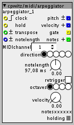
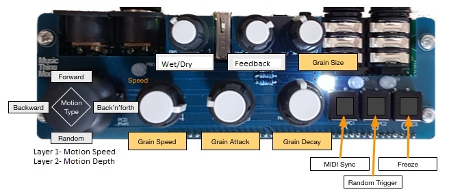
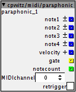
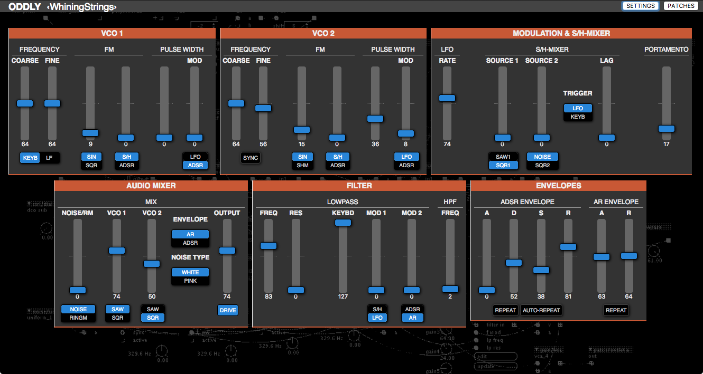
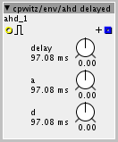

Strange. I tested it with macos and windows and it opens without complains. Which version of the Axoloti software are you using? Latest 1.0.10?
Cpwitz Contributions
UHOH
#42
Yeah, I updated to 1.0.10 before trying... I am on an older Mac OS tho' (10.7.5) which I guess might have something to do with it?
thetechnobear
#43
have you done a 'sync libraries' since you upgraded?
if still have something, post in the helpdesk category, including details of your setup, and also a copy of what is being reported in the console, during startup and also when you attempt to run the patch.
cpwitz
#44
Yeah, I really like your layered controller approach and already experimented with it!
But IMHO it's a bit complex switching layers and indicating the user which layer is active with the given LEDs. For example in a performance situation this could lead to frustration... especially if I am this poor user 'cause I can't remember what buttons I pressed 20 seconds ago  . I rather like "one knob per function" interfaces.
. I rather like "one knob per function" interfaces.
One idea comes to mind: A shift button! Using the joystick button as a shift button (maybe indicated by flashing LEDs) and as long it is pressed, the knobs change their function (feedback and stereo in this case). What do you think about that?
UHOH
#45
Thanks so much! - Through the comments made here I found out what was going wrong and it was a dumb mistake on my part, due to having too many copies of patches stored in different places whilst rushing to get something working.
I now have @cpwtiz's grain mill running with the input being triggered feedback loops. Fun stuff!
I love the grain-mill patch too. Will attempt to get it running off a Behringer BCR2000 soon (alongside aforementioned feedback).
Thanks again!
cpwitz
#46
cpwitz/midi/arpeggiator.axo
A simple'n'easy-to-use MIDI arpeggiator. It features
- 5 arpeggio directions: Up, down, up/down, random and play order
- Up to 3 additional octaves
- Adjustable note length with modulation inlet
- Fixed velocity setting or using incoming trigger-note's velocity
- "Hold" inlet to latch the arpeggio notes (a MIDI sustain pedal message also sets "hold")
- Semitone transpose inlet
You need a clock source to trigger the arpeggiated notes. This can be either a square LFO, a (divided to note values, if u like) MIDI clock input or a trigger sequencer.
With the pitch, velocity and gate outlets you can control your oscillators, envelopes or more complex sound sources.
If you want to send the arpeggio to another MIDI device, you can employ a factory "midi/out/note" object.
These are the controls:

MIDIchannel: Selects the MIDIchannel the arpeggiator is listening on. Caution: It listens on all MIDI devices. I was too lazy to make a device selection (please insist, if it's really needed).
direction: (from left to right) up, down, up/down, random, play order.
notelength: sets how long the gate out is held
octaves: adds up to 3 octaves to the arpeggio range
velocity: Set a fixed output velocity. Value 0 means, the velocity of the incoming trigger note is used
The arpeggiator has two displays on the bottom: showing the number of notes, the arpeggio consists of, and an indicator, showing if the arpeggio is held.
Updated:
- The notelength can be externally modulated with the notelength inlet
- The "notes outlet" outputs the number of notes as integer value
- retrigger parameter: When the notelength is longer than the clock interval, this checkbox sets retriggering of the gate every time a new arpeggio note is played. Especially good, if you send the arpeggio to other MIDI devices and don't want to lose note triggers.
P.S.: Imagine multiiple arpeggiators in one patch, triggered with different clock divisions and set to alternate directions, octaves and pan positions of their sound generators... I just had fun 
spunkytoofers
#47
i start to get a little lost if there are too many layers of knobs going on. there is still one more analog input available at PC4 and you can fit a 9mm right angle pot beneath the joystick. i added a knob that seems to work well as a thumb dial.
so as cpwitz suggested i used the joystick button but limited it to only one knob to share motion speed and depth. the joystick's button shift layer activates the depth setting; that way you can scrub in and out motion depth with joystick button clicks. the speed is always active (doesn't do anything if the depth is scrubbed in at a 0 setting.

cpwitz
#48
cpwitz/midi/paraphonic.axo
It's quite a hype nowadays for every hardware synthesizer with more than one oscillator, to have a "duophonic/paraphonic" play mode to get something like polyphony even if there's only one filter and vca. I'm not criticising, because this offers really some interesting new playing styles.
So here it is: A "4 notes paraphonic" (quadrophonic?) MIDI input object for Axoloti.

DISCLAIMER: "Paraphonic" does not mean "polyphonic". If you intend do build a real polyphonic patch, use the recommended "polyphonic subpatch" approach!
This object is designed to build a so-called "paraphonic" synthesizer voice.
The outlets note1-4 deliver the notes of up to four pressed keys. If only one key is pressed, all note outlets send the same note unisono. Up to three additionally pressed keys are distributed over the note1-4 outlets. More keys than four are simply ignored.
The gate outlet is high as long as any key is pressed. The "retrigger" checkbox turns on retriggering of the gate outlet with every additional keystroke.
The velocity outlet delivers the velocity of the first hit key.
The MIDI input channel is independent from the patches settings, just set the MIDIchannel attribute to the desired input channel. Channel 0 means "listen on all channels".
If you just want to make a "duophonic" voice (2 oscillator) or "triphonic" (3 oscillators) just connect only note1-2 or note1-3 and leave the remaining notes unconnected.
There's a demo patch, a 4 oscillator paraphonic fm synth with really low cpu load and funny sound: patches/cpwitz/synths/fmsynth-paraphonic.axp
cpwitz
#49
Vintage Synths & Web-MIDI Controller interface
IMHO the signal flow of vintage premium synths is at least as inspiring as their actual sound. I started to test this theory with rebuilding two classics with Axoloti: A Juno-106 and an ARP Odyssey. I didn't expect (neither should you) that the real-and-true-and-only sound can be reproduced with existing Axo objects. But the spirit of an old vintage machine can be approached, I think.
So here they are in the community library as patches:
patches/cpwitz/synths/webmidi/oddly.axp
An approach to an Odyssey. Two routing limitations exist: The filter is not audio-rate modifiable with the sample&hold mixer, and the osc2 sync doesn't work with pulse wave (when synced, it's always playing a plain square wave). Thanks to @johannes for his 24db lowpass filter jt/filter/vcf4pole. This patch is 2-voice paraphonic.
patches/cpwitz/synths/webmidi/junebug.axp
My attempt to recreate a Juno-106. Pretty damn close, I think. It's 6-voice polyphonic. Here the stereo chorus from @DrJustice is a pretty important part: drj/fx/stereo_chorus.
Web-MIDI Controller
You might ask: Why are these synths in a "webmidi" folder?
When fiddeling with sounds I find the well-loved Axoloti Patcher interface a bit too distractingly fiddly. And therefore I built a little HTML/JavaScript application which allows a more sexy and focused interface for handling synth parameters via MIDI CC. For several years now, the Chrome browser offers a JavaScript Web-MIDI API which I was longing to use for something for a long time.

Here's what you need to do, to use it:
- Install a Google Chrome Browser
- Download the webmidicontroller.zip from GitHub
- Unpack the ZIP file
- Start one of the mentioned Axo patches on your Axoloti
- Open the corresponding HTML file from the extracted ZIP content with Chrome (either drag'n'drop the HTML onto the Chrome Application or right-click and choose "open with...")
- Press the "Settings" button on the web page in Chrome and select your Axoloti for "MIDI out". Depending on your setup you can either use the "Axoloti Core" device (the directly to the computer connected Axoloti) or the MIDI device, where your Axoloti is attached to.

- Select the correct MIDI channel for each patch. Due to my MIDI setup the patches are configured like this:
oddly.axp is on channel 5,
junebug.axp is on channel 4 and the
formantor.axp is on channel 14. - If you have a MIDI controller keyboard you can configure it as "MIDI in" in the settings dialog and the changes you make with your controller keyboard are displayed on the Chrome page. Of course your controller keyboard needs to be configured to use the corresponding MIDI CC numbers. The MIDI CC numbers of each control on the interface are shown as mouse-over tooltip.
- Press the "Settings" button again to close the settings window.
This is the JUNEBUG controller with the patches dialog opened.
Each controller page can store up to 128 patches and comes with a bunch of presets that I fumbled together. The interface should be quite self-explanatory. Just press the "Patches" button.
I also added my formant-synthesizer to be controlled with such a web-interface. The patch is in patches/cpwitz/synths/webmidi/formantor.axp and the HTML page from the ZIP is called formantor.html.
You can use this HTML/JavaScript to build your own controller interfaces for your patches or even real synths. With some basic HTML-knowledge you can make your own controller pages, sending whatever CC-values you like. There is a file called xx-template.html and if you open it with your favorite HTML editor (or on GitHub) you'll find comments inside the mark-up explaining, what you can do. Just copy the xx-template.html to a new file and make the appropriate changes to it.
That's it, tell me what you think about it!
Peter
P.S.: By the way - this web-application works completely offline and does not call any remote URLs or sends any data to any server in the world!
biamau
#50
trying to upload your patch I get the following error
Saving preferences...
preferences path : C:\Users\Mauro\Documents\axoloti\axoloti.prefs
java.lang.ClassNotFoundException: is-copy-enabled is-u2f-enabled
java.lang.ClassNotFoundException: is-copy-enabled is-u2f-enabled
at java.net.URLClassLoader.findClass(URLClassLoader.java:381)
at java.lang.ClassLoader.loadClass(ClassLoader.java:424)
at sun.misc.Launcher$AppClassLoader.loadClass(Launcher.java:331)
at java.lang.ClassLoader.loadClass(ClassLoader.java:357)
at org.simpleframework.xml.strategy.Loader.load(Loader.java:50)
at org.simpleframework.xml.strategy.TreeStrategy.readValue(TreeStrategy.java:163)
at org.simpleframework.xml.strategy.TreeStrategy.read(TreeStrategy.java:102)
at org.simpleframework.xml.convert.AnnotationStrategy.read(AnnotationStrategy.java:100)
at org.simpleframework.xml.core.Source.getOverride(Source.java:360)
at org.simpleframework.xml.core.Factory.getConversion(Factory.java:207)
at org.simpleframework.xml.core.Factory.getOverride(Factory.java:139)
at org.simpleframework.xml.core.ObjectFactory.getInstance(ObjectFactory.java:63)
at org.simpleframework.xml.core.Composite.read(Composite.java:139)
at org.simpleframework.xml.core.Traverser.read(Traverser.java:92)
at org.simpleframework.xml.core.Persister.read(Persister.java:625)
at org.simpleframework.xml.core.Persister.read(Persister.java:606)
at org.simpleframework.xml.core.Persister.read(Persister.java:584)
at org.simpleframework.xml.core.Persister.read(Persister.java:543)
at org.simpleframework.xml.core.Persister.read(Persister.java:521)
at org.simpleframework.xml.core.Persister.read(Persister.java:426)
at axoloti.PatchGUI.OpenPatchInvisible(PatchGUI.java:1003)
at axoloti.PatchGUI.OpenPatch(PatchGUI.java:1025)
at axoloti.FileUtils.Open(FileUtils.java:166)
at axoloti.menus.FileMenu.jMenuOpenActionPerformed(FileMenu.java:255)
at axoloti.menus.FileMenu.access$200(FileMenu.java:51)
at axoloti.menus.FileMenu$3.actionPerformed(FileMenu.java:107)
at javax.swing.AbstractButton.fireActionPerformed(AbstractButton.java:2022)
at javax.swing.AbstractButton$Handler.actionPerformed(AbstractButton.java:2348)
at javax.swing.DefaultButtonModel.fireActionPerformed(DefaultButtonModel.java:402)
at javax.swing.DefaultButtonModel.setPressed(DefaultButtonModel.java:259)
at javax.swing.AbstractButton.doClick(AbstractButton.java:376)
at javax.swing.plaf.basic.BasicMenuItemUI.doClick(BasicMenuItemUI.java:833)
at javax.swing.plaf.basic.BasicMenuItemUI$Handler.mouseReleased(BasicMenuItemUI.java:877)
at java.awt.Component.processMouseEvent(Component.java:6535)
at javax.swing.JComponent.processMouseEvent(JComponent.java:3324)
at java.awt.Component.processEvent(Component.java:6300)
at java.awt.Container.processEvent(Container.java:2236)
at java.awt.Component.dispatchEventImpl(Component.java:4891)
at java.awt.Container.dispatchEventImpl(Container.java:2294)
at java.awt.Component.dispatchEvent(Component.java:4713)
at java.awt.LightweightDispatcher.retargetMouseEvent(Container.java:4888)
at java.awt.LightweightDispatcher.processMouseEvent(Container.java:4525)
at java.awt.LightweightDispatcher.dispatchEvent(Container.java:4466)
at java.awt.Container.dispatchEventImpl(Container.java:2280)
at java.awt.Window.dispatchEventImpl(Window.java:2750)
at java.awt.Component.dispatchEvent(Component.java:4713)
at java.awt.EventQueue.dispatchEventImpl(EventQueue.java:758)
at java.awt.EventQueue.access$500(EventQueue.java:97)
at java.awt.EventQueue$3.run(EventQueue.java:709)
at java.awt.EventQueue$3.run(EventQueue.java:703)
at java.security.AccessController.doPrivileged(Native Method)
at java.security.ProtectionDomain$JavaSecurityAccessImpl.doIntersectionPrivilege(ProtectionDomain.java:76)
at java.security.ProtectionDomain$JavaSecurityAccessImpl.doIntersectionPrivilege(ProtectionDomain.java:86)
at java.awt.EventQueue$4.run(EventQueue.java:731)
at java.awt.EventQueue$4.run(EventQueue.java:729)
at java.security.AccessController.doPrivileged(Native Method)
at java.security.ProtectionDomain$JavaSecurityAccessImpl.doIntersectionPrivilege(ProtectionDomain.java:76)
at java.awt.EventQueue.dispatchEvent(EventQueue.java:728)
at java.awt.EventDispatchThread.pumpOneEventForFilters(EventDispatchThread.java:201)
at java.awt.EventDispatchThread.pumpEventsForFilter(EventDispatchThread.java:116)
at java.awt.EventDispatchThread.pumpEventsForHierarchy(EventDispatchThread.java:105)
at java.awt.EventDispatchThread.pumpEvents(EventDispatchThread.java:101)
at java.awt.EventDispatchThread.pumpEvents(EventDispatchThread.java:93)
at java.awt.EventDispatchThread.run(EventDispatchThread.java:82)
cpwitz
#51
Hello, I need a bit more help and context to understand the problem.
What do you mean by "upload"? Opening the patch fiile? Going live with the patch? What exactly did you do, that produced this error message?
Which patch do you mean (I mentioned three in my post: oddly, junebug and formantor)?
Which version of the Axoloti Patcher do you use?
biamau
#52
I have the following configuration:
Axoloti version : 1.0.11-0-g4ffd432 build time : 28/08/2016 19:54:34 CEST
Link to firmware CRC 50A29AA2
Status: factory (1.0.11,anon) : OK ( 1.0.11,dirty )
Changes for: factory (1.0.11,anon)
Status : home : OK
Status: community (1.0.11,anon) : OK ( 1.0.11,dirty )
Changes for: community (1.0.11,anon)
_untracked: objects/lokki/bassBM.axs _
USB device found
connected
Authentic Axoloti Core
search path : C:\Users\Mauro\Documents\axoloti\axoloti-factory\objects
search path : C:\Users\Mauro\Documents\axoloti\objects
search path : C:\Users\Mauro\Documents\axoloti\axoloti-contrib\objects
Firmware version: 1.0.0.1, crc=0x50A29AA2, entrypoint=0x20011000
finished loading objects
I loaded all three of your patch, and immediately gives me the problem
cpwitz
#53
To be sure that not my local configuration is giving me false confidence that the patches work elsewhere, I just tested the patches with a cleanly installed Axo system under windows. I can't reproduce the error message you were posting. Maybe there's something with your configuration, but I have no idea what this could be, sorry.
biamau
#54
problem solved, I realized that I downloaded the html link not the files for axoloti. I was a stupid, thanks for the support.
I'm trying your synth with remote management, the cc messages arrive in patcher but the controls do not change.
cpwitz
#56
There's only a one-way connection to the Axoloti patch. The HTML-Page can change the patches' parameters via MIDI CC on the Axoloti. But the Axo patch does not send the changes you made in the Axoloti patcher software out to the web browser (this would indeed be very hard to wire in a patch). It's designed for "headless use" (Axoloti running the patch stand-alone without patcher software).
cpwitz
#57
Two handy components, that I needed for my upcoming synth recreation attempts:
cpwitz/lfo/shaped-triangle
This LFO's wave can continuously morph from ramp-down to triangle to ramp-up waveforms.
As ASCII art: |\ ... /\ ... /|
It's based on DrJustice's practical LFOs with phase input.
cpwitz/env/ahd delayed

A delayed AHD envelope. The delay parameter determines the time until the attack phase starts, when an opening gate is received. Useful for building delayed modulation, e.g. filter or pitch tremolo.
It's a simple adaptation of the factory ahd envelope.
cpwitz
#58
Had some spare time during holidays...
MS-19
I tried to build a recreation of the classic MS-20 with my approach not to achieve the exact vintage sound but mainly the routing possibilities of a classic synthesizer.
And there's also a Web-MIDI interface for it.

{kind=link}
{kind=link}
It implements the standard routings of a MS-20 and (since a patch matrix would be far too complex to implement in the time given) some additional routings, that would be possible with the patch field on the original machine.
To get the Web-MIDI interface you need to download and install the latest release of my Web-MIDI controller HTML/JavaScript. The process is described in the original post.
kat
#59
Just want to toss in a random note of appreciation for your fake-granuverb patch... It is such a lovely guitar effect and I've now got two songs that I'm working on recording (just on an amateur level, for my own purposes) using it in different ways. If this effect were the only thing I got from buying the Axoloti, it would be worth it!
Androoclops
#60
Huuuge!
I was working on a juno 6 patch last night and am super curious as to how you managed to get 6 note polyphony out of the Axo board. Mine only does 4 so far.... sounds different.. does some self-oscillating stuff (but I like this part)
Can't wait to get home and try this patch out tonight